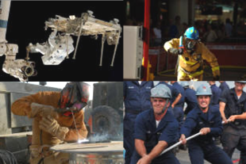
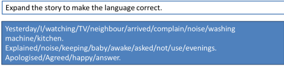
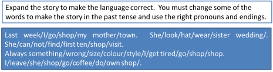
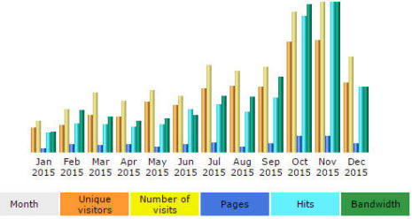
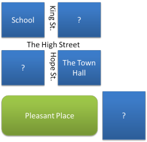
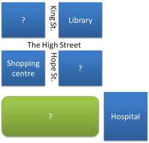

Task types

You should follow the guide to Activity Types (new tab) before doing this. The assumption is that you have and know the difference between awareness-raising, skill-getting and skill-using activities.
This is not a guide to task-based learning. There is
one on this site, linked in the list of related guides at the end,
and if you follow it, you will be aware that in that tradition, the
term task is used in a special sense.
In this guide, we are using the word to mean any exercise that
you give learners at any stage in the lesson. It mostly excludes
teacher-fronted activities and focuses on the kinds of things you
can get students to do in class and why you should ask them to carry
out some kind of task.
Embedding tasks in activities: the relationship between task and activity purpose |
As you know if you have followed the guide to activity types, we need to focus on activities which are purely to raise people's awareness, those which help them acquire new language or a skill and those which give them the opportunity to put the language or skill into action.
Tasks can be classified in the same way but the picture is a
little more complicated because single task types can be embedded in
all three activity types.
Here's an example of what is meant using a popular task type:
the
matching exercise.
| Task | Activity type | Comment |
| Before watching a set of short video clips, students match a picture of a person with pictures of what sort of sports they play. There are clues in each picture. | In this case, the task is designed
to get the learners thinking about sports and activities and
prepare them a little for what they will see in the video.
There's no attempt to teach or practise the language. It's a controlled exercise but the outcomes are not as important as doing the task. |
|
| While and after listening to a short text about a man's life and the important things that happened to him, students cooperate to position events on a time-line of the man's life from early days to retirement. | In this case, the task is intended
to give the learners a reason for listening and to get them
to focus on the particular parts of what is said that allow
them to complete the task. It encourages both
listening for specific information and ignoring irrelevance
and on understanding what's said and what happened. It is tightly controlled and outcomes will have to be checked carefully before the lesson can continue. |
|
| Students work individually to
write important events that happened to them on pieces of
card.
They also draw a blank time-line for their own lives with
dates but no other information inserted. Then they swap events and time lines and interview each other asking questions to insert the events in the right order on the time line. |
In this task, the object is to get
the learners to use questioning language and narrative
tenses in a freer and personalised way. They will also
need to deploy language like, "So XXXX happened before YYYY,
did it?" and so on. They are practising (i.e., using) speaking and listening skills along with the grammar and some quite unpredictable lexis. It is a free task with uncontrolled output from the students. |
It's important for you to see that in all three cases here, the task type is unchanged – they are all matching activities of some sort. What changes is the activity type into which the task is embedded and with it, the purpose of the task and the amount of feedback which is required.
 |
Task types |
There is a huge range of task types that can be used in classrooms
and a good place to look for ideas is in a variety of coursebooks to
see what tasks the authors have designed.
What follows is an introduction to some of the commonest.
At
the end of each description and example, you'll be asked to think
about what activity types the tasks can be inserted into and what they
do.
Matching exercises have been covered in this respect so don't figure
in what follows.
 |
Gap filling |
These are almost always very controlled tasks and frequently there is only one possibility per gap to be inserted. Here's an example:

To read about what gap-fill tasks are like, click here to try a gap-fill test for yourself.
Gap fills can be quite versatile and you can design one with
virtually any text, including dialogues and so on. The gaps
can be as large or as limited as you like but the more words that
have to be inserted, the more variable will be the possible
solutions.
Gap-fill tasks also work well for while-listening tasks at all
levels if you want your learners to notice certain
items in the text. You can also use gap-fill tasks in
dictations for the same purpose.
There is a guide to
noticing on this site (linked below) in the in-service section but it is
somewhat technical.
During what sorts of activities would you insert a gap-fill task
and for what reason?
Click here when you have a response to that.
| Gap-fills are usually part of skill getting activities because they are designed to focus the learners precisely and check that learning is taking place. Because they are so controlled, they are poor measures of skills using and are not helpful for awareness raising because they test rather than intrigue or energise. |
 |
Role play |
Role play tasks come in a variety of flavours and are extremely versatile.
- Free role-play tasks
In these, it is up to the learners to take the dialogue where it will go and only the sketchiest of instructions need be given. For example:
You're on a train and have just met a college-friend you haven't seen for five years. OK? Go. - Assigned role-play tasks
In these, learners do not react as themselves but in a role or as a character that you give them. For example:
Student A is a very unhappy customer because the expensive camera he bought burst into flames in his car.
Student B is the manager of the shop and has had a very bad day.
His patience is thin and he thinks this customer is not telling the truth. - Controlled role-play tasks
In these, the roles and the language to use may both be specified. For example, such a task might require learners to use particular tense forms and take on particular characters. Ask-and-answer scenarios are popular such as enquiring about future plans, advising a fellow student, encounters between strangers and locals etc. - Mixed role-play tasks
In these, there are possibilities:- The roles may be assigned but not the language.
- The language may be prescribed but students act as themselves.
In what kinds of activity phases are role-play tasks effective?
Click here when you have an answer.
| Role-play tasks can be effectively used in skill-getting phases of lessons if they are sufficiently controlled. Types 3 and 4 above are best for this. | |
| Role-plays can also be used in skills-using stages. Providing the set-up of the role play is sufficiently clear, it can be focused on the sorts of language and skills we want the learners to use. Types 1 and 2 above work best in these phases. |
 |
Skeletons |
Skeleton tasks are allied in some ways to gap-fill tasks but the
gaps are not explicitly signposted. Usually, these tasks focus
on structure, often tense forms, and are used to consolidate
language learning and encourage noticing.
As the name and the graphic imply, the learner is presented with a
skeleton of the text and is asked to expand it by inserting words
and, sometimes, changing words.
They can be quite finely focused.
Here are two examples:
- Expansion only:
-

Learners can work alone or in small groups on tasks like these to come up with
Yesterday I was watching TV when my neighbour arrived to complain about the noise of/from my washing machine
and so on. - Expansion and alteration:
-

Here the learners have to do a lot more work to end up with sentences such as
I left her in a shop and went for a coffee before doing my own shopping.
This is a much harder exercise.
In what kinds of activity phases are skeleton tasks effective?
Click here when you have an answer.
| Expansion only tasks, like the first one, are useful to focus learners on particular areas of structure and, especially, sentence connectors. Because they are so controlled, they are associated with skill-getting activities. | |
| However, if the clues are sufficiently diminished in terms of how much has to be inserted to make sense, and the learners are obliged to change a good deal as well, they can be used for skill-using phases, especially when the focus is on writing skills. |
 |
Listing and prioritising tasks |
- Listing
- Listing tasks are simple and effective. For example:
Make a list of three things you are not going to do this evening.
List four sports you have never done.
List 5 things about your hometown that you like / don't like.
Make a list of all the words you know connected with zoos / cars / kitchens / pets etc.
List four verbs / nouns / adjectives etc. you expect to find in a newspaper report of a road accident. - Prioritising
- Prioritising tasks require a bit more thought. For
example,
List 5 things you like about your own country in order of importance.
Make a list of six things you must not forget when you travel abroad in order of importance.
List five prepositional phrases you expect to find in an article reviewing a holiday resort and put them in the order you think they will come.
In what kinds of activity phases are listing and prioritising tasks effective?
Click here when you have an answer.
|
Simple listing tasks are frequently used to get learners
thinking about a topic and prepared for whatever follows (a
reading text, a video or whatever). Prioritising tasks are often used for the same purposes but require a bit more depth of thought (and are often considered more effective because of that). |
|
|
They are often followed up with comparing lists in pairs and
noting similarities and differences and this can be a
skill-getting task if learners are required to learn from
each other's lists and acquire some new lexis. Listing the order in which you expect to find things in a text is a skills-getting task, encouraging students to notice how texts are conventionally ordered in English. |
|
| Prioritising tasks, if done in pairs or groups, can require a good deal of negotiation and discussion, especially focusing on the language used for supplying reasons and justifications and in trying to persuade others. In this sense they are very often skill-using tasks. | |
| Much depends, of course, on what happens after the task is completed. If the task is purely for awareness raising, little extension is needed but if it is followed up more explicitly and learners are required to share information or compare their lists and priorities with what they see / hear / read, then they are true skills-getting tasks. | |
 |
Discussion and debate tasks |
Discussion tasks can be simple or complex and formalized.
- Simple exchange of views
- Tasks such as:
Talk to your partner / in your group about what you find difficult to learn in English.
Tell your partner about your favourite food and how to make it.
Explain to your partner why you are learning English.
etc. - More complex discussion tasks
- These can be formal debates with a motion and speakers on
both sides at their most elaborate. They usually come in
the conventional form of This house believes ....
They can also be tasks such as:
Work in a group to decide on the three best ways to cut pollution in cities.
When you have done that, join with another group to discuss how far you agree and differ.
Persuade the other group that you have the best ideas.
In what kinds of activity phases are discussion tasks effective?
Click here when you have an answer.
| The talk-to-a-partner about ... style of discussion is frequently used as a way to get learners thinking about the topic at the outset. This is purely an awareness-raising task. | |
| Discussion tasks, especially of the more elaborate kind, are skill-using tasks designed to allow learners to deploy language and speaking skills in a way that might simulate real-life conversations and discussions. | |
| It is worth noting here that discussion tasks do not work well in skill-getting activities because little that is new is being learned. Learners are using language they already command. | |
 |
Transformation and transfer tasks |
- Transformation tasks
- These are generally severely form based and require learners
to change one form into another. At their dullest and
least useful they ask people to change all tenses from, say,
present to past, or make all first conditionals into second
conditional forms.
Exercises like this are poor because speakers use forms to match communicative aims, not the other way around so if someone says, e.g.,
The door was opened very quietly
instead of
She opened the door very quietly
there is a reason for the choice (to do with marking the theme, in fact).
Simply transforming one structure into another is rarely a productive thing to do.
There are times when it is a useful focusing and form-practice task, however. Here are two examples:
Direct to indirect speech:
Listen to the interview between the reporter and the police officers and then write the newspaper report.
This actually does practise a real-life skill because we often report what someone has said to us directly into indirect speech along the lines of
John told me that ...
Doing it in writing allows the learners to focus on form before they have to use it in spoken exchanges.
Style shifting:
Transforming a text from an informal email to a formal one or vice versa is often a good way for learners to be made aware of and focus on the lexis and structure which is characteristic of the style. For example:
We made up our minds to put the do off
might become
It was decided to postpone the celebration - Transfer tasks
- Given, for example, a graphical representation of data,
learners need to transfer the information to another medium such
as prose or a spoken presentation. For example, given
this:

learners might be required to summarise the data in speech or in writing.
This is a skill demanded in some examinations such as IELTS and is also useful for those studying English for Academic Purposes.
Picture stories, too, fall into this category because they are frequently used to provide a stimulus for speaking through the use of a set of images. (A search engine request for 'picture stories' or using images from the web will find plenty of material, incidentally.)
In what kinds of activity phases are discussion tasks effective?
Click here when you have an answer.
|
Transformation tasks are very controlled practice and as
such to do with checking understanding and the ability
to manipulate form. Transfer tasks can also be used as part of skill-getting activities if they are clearly focused on the use of a limited range of language (e.g., rising steadily, beginning to fall back etc., in the example of the graph). |
|
|
Transformation tasks such as the reporting exercise above,
can be used in skills-using phases but this is rarer and
they have to be carefully designed if any authentic (or even
semi-authentic) use is to be encouraged. Picture stories are also skills-using tasks. Transfer exercises can be skill-using tasks because, in certain settings, such as academic studies, the skill is a real one which has to be used. |
 |
Information-based tasks |
There are two sorts of these:
- Information-gathering tasks
- Learners can gather information in a number of ways:
From other learners: either in the same class or institution-wide, learners can be set tasks which require them to question, interview or interrogate others to gather data for later work. Simple mingling tasks in which learners find someone who ... fall into this category.
From other people: in some teaching environments, it is possible to ask learners to leave the classroom (or work outside class hours) to gather information from members of the public, retail outlets, advice bureaus and so on.
From reference sources: learners can be set tasks that require them to research from text or internet-based resources and gather data for later treatment. - Information-gap tasks
- These tasks work by giving students part of the whole and
requiring them to work with others to complete the picture.
Here's an example.
Learner A gets the map on the left, Learner B, the one on the right.
Without showing each other their maps, the learners have to fill in the missing data by asking and answering questions about location and relative location.
Tasks like these do not have to be pictorial, of course. They can take the form of missing passages in a story, partial instructions in a recipe and many other forms. They can also be based around listening and/or video material. 
In what kinds of activity phases are information-based tasks effective?
Click here when you have an answer.
|
These tasks are solely skill-using tasks designed to allow
learners to deploy language and speaking skills in a way
that might (just) simulate real-life situations. We
communicate very often to fill in a partial understanding or
complete partial information so the tasks can act as a kind
of rehearsal for real-life encounters. We also use a range of sources, people we know, strangers, the web, books etc., to gather information that we need. |
 |
Task difficulty |
Tasks come with instructions and one simple
way to judge how hard a task is is to look at the instructions you
intend people to follow when doing the task.
For example, if the task simply involves remembering something quite
easy, such as being able to make a list of all the nouns in a
sentence, the instruction may just be something like:
Please underline all the nouns in this paragraph.
On the other hand, if a task requires an instruction such as:
Organise your list into mass nouns and countable nouns and look at the articles we use with them.
then it is clear that you are demanding a good deal more of your learners.
At the most demanding level, a task may have an instruction such as:
Write the procedure for a guest concerning how to use the heating controls in your house and what to do with the burglar alarm when they go out and come in.
then you are being very demanding indeed and you cannot expect learners to be able to do that without a good deal of careful preparation.
Here's a checklist of instructional language organised, from left to right in terms of how demanding the task is likely to be. The further to the right you go, the more you are challenging your learners and the more you need to consider how much preparation is required.
| remember | understand | apply | analyse | evaluate | create |
| Circle Count Identify Label List Match Name Pair Record Recall Relate Repeat State Tell Underline |
Communicate Compare Describe Discuss Explain Express Identify Illustrate Recognize Rephrase Restate Talk about Tell Translate Understand |
Apply Ask Complete Demonstrate Dramatise Employ Illustrate Interpret Join Operate Practise Relate Role-play Sketch Use |
Analyse Arrange Categorize Compare Contrast Debate Diagram Differentiate Distinguish Examine Experiment Investigate Organize Question Test |
Appraise Argue Assess Choose Conclude Evaluate Interpret Judge Justify Measure Rate Score Select Support Value |
Assemble Collect Combine Compose Construct Create Design Devise Formulate Make Manage Plan Prepare Propose Setup |
If you would like to learn more about levels of challenge, try the guide to Bloom's taxonomy of educational objectives, linked in the list at the end.
 |
Test–Teach–Test and
|
What tasks do depends to some extent on the lesson structure you use (and there's a guide to structuring lessons on this site, linked below).
In Test – Teach – Test lessons, skill using will
often come before skill getting and then skill using will again be
the focus.
Awareness raising still usually comes first and what is described
above as a skill-using task will often, in fact, be used as an
awareness-raising task which alerts the learners to their need to
acquire the language or skill they must have to do the task.
In Task-based Learning lessons, awareness raising has to come early but then the focus is on entwined skill using and skill getting. The theory is that skill using stimulates skill getting.
So there's no single right way to order the activities. We do, however, need to make sensible judgements about what sorts of tasks we need and into which kinds of activities they are embedded or lessons can become incoherent and procedures will not match aims.
| Related guides | |
| classroom organisation | for the guide to the overall arrangement of the classroom |
| activity types | for a guide to the three essential forms of activities and what they do |
| structuring lessons | for a guide to how you can see the overall structure of a lesson and insert appropriate activities into it |
| task-based learning | for the in-service guide to task-based learning and teaching |
| noticing | for the guide in the in-service section |
| Bloom's taxonomy | this is a way of classifying the cognitive demands that tasks place on learners |